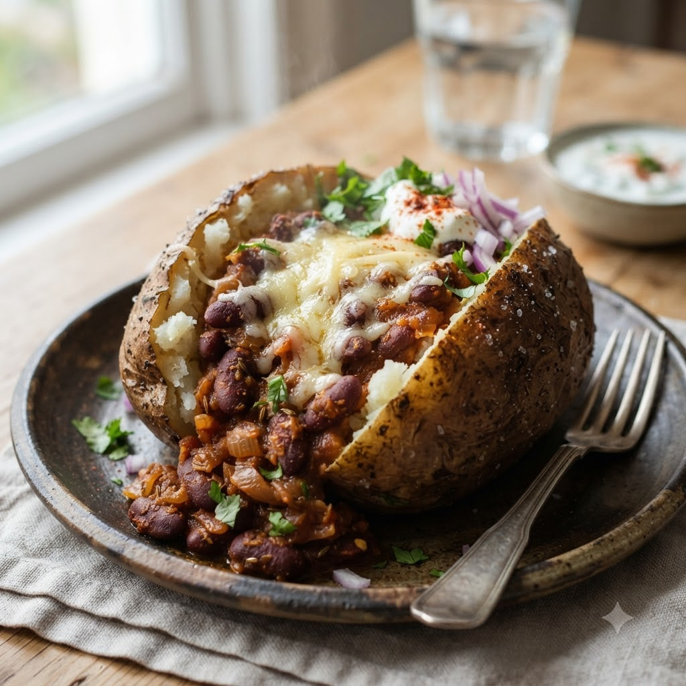

Rajma-Stuffed Baked Potatoes

Rajma-Stuffed Baked Potatoes
Airfryer – Bake 190°C 38 min — Serves 4
Ingredients
- 4 large potatoes
- 1 cup cooked rajma (kidney beans) in light gravy
- 1/4 cup grated cheese
- 2 tbsp butter
- Salt & pepper to taste
- Chopped coriander (dhania)
Method
1Preheat: Preheat the Airfryer to 190°C for 4 minutes before adding the food to the basket.
2Prick potatoes all over and rub lightly with oil.
3Bake at 190°C for 38 minutes until fork-tender.
4Slice open, fluff the inside, and top with warm rajma, butter and cheese.
5Return to the basket for 4 minutes to melt the cheese; garnish and serve.